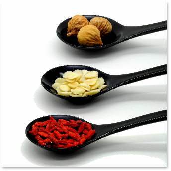
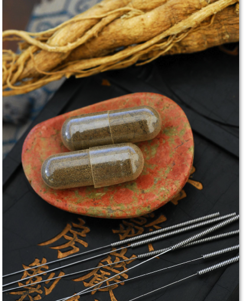

JANNA SIEGEL
L.Ac., Dipl. O.M.
I am a licensed acupuncturist in the state of New York, a certified diplomate with the National Certification Commission for Acupuncture and Oriental Medicine, and hold a Masters of Science in Traditional Oriental Medicine from Pacific College of Oriental Medicine in New York City. My training includes acupuncture, herbal medicine, tuina (therapeutic body work), Eastern nutrition, and various other complimentary healing modalities. I have undergone two separate certification for sexual assault and violence intervention counseling. I am also a 500-hour certified, registered yoga teacher. Using traditional Chinese medicine as the foundation, I draw from my multi-disciplinary background to address the specific needs of each patient and provide a holistic and comprehensive treatment plan focusing on long-term health goals.
MY JOURNEY
I have always been a seeker. For many years I dabbled in careers that were uninspiring at best and suffocating at worst, eventually realizing I had to find a better path. In a state of profound uncertainty, I turned to the things that brought me comfort, and that’s when everything changed. It was in this time of transition that a caring, insightful teacher showed me that my favorite hobby could indeed be my career, and encouraged me to start a yoga teacher training. Suddenly my desire for exploration and human connection became the way I was spending my days and I learned that work could be rewarding and fun.

It was through a class that I taught at what would eventually become my graduate school that I was introduced to Chinese Medicine. Between my own experience as an acupuncture patient and the glimpses I had received sitting in on lectures and talking to students and practitioners, I knew this was something I needed to pursue.
After four years of intense study and internships, I earned my license, opened my practice, and I haven’t looked back since. In truth, this medicine is just too special not to share. So here I am today, excited to show you just how powerful this medicine can be.
WHAT TRADITIONAL CHINESE MEDICINE (TCM) MEANS TO ME
TCM appeals to me in many ways. The principles are uncomplicated. The simplest solution tends to be the right solution. Subtract where there is too much, add where there is not enough, move what’s stuck, subdue what’s out of control, ignite what’s inert. It is minimally invasive with few if any side effects. Results are reliant upon the body’s own capabilities to perform it’s job and keep us healthy. Once the imbalances are rectified the body takes care of itself and treatments are only required for maintenance. TCM is not about damage control — it is about prevention, protecting our constitutional vulnerabilities and slowing or stopping potential pain, disease, or discomfort.
I am inspired every day by the positive changes I’ve seen in my patients and grateful to spend my days sharing something I love. I hope you’ll join me in becoming part of the Thrive community!